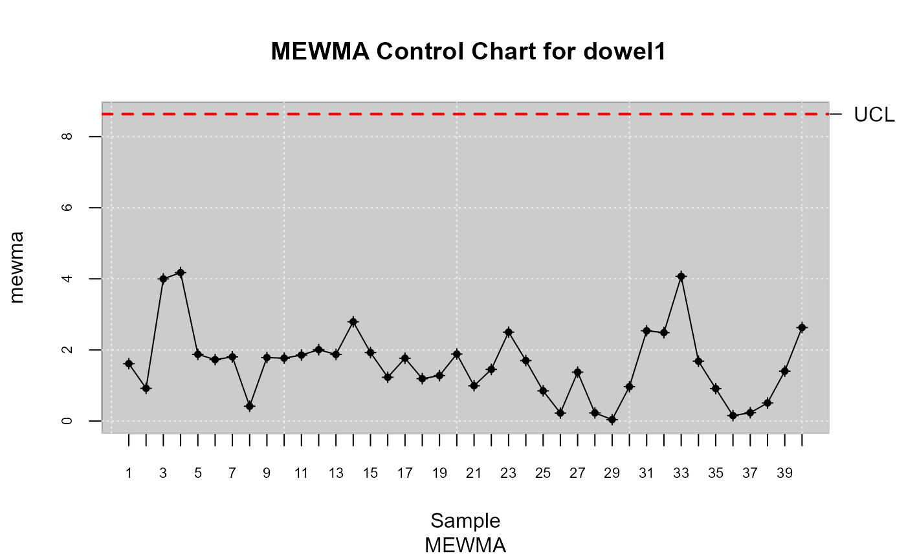

This function is used to compute statistics required by the Multivariate Exponentially Weighted Moving Average (MEWMA) chart.
Usage
mqcs.mewma(x, ...)
# S3 method for default
mqcs.mewma(
x,
data.name = NULL,
limits = NULL,
Xmv = NULL,
S = NULL,
method = "sw",
plot = FALSE,
...
)
# S3 method for mqcd
mqcs.mewma(
x,
limits = NULL,
Xmv = NULL,
S = NULL,
lambda = 0.1,
method = "sw",
plot = FALSE,
...
)Arguments
- x
An object of class 'mqcd'
- ...
Arguments passed to or from methods.
- data.name
A string that specifies the title displayed on the plots. If not provided it is taken from the name of the object
x.- limits
A two-values vector specifying the control limits.
- Xmv
The mean vector. It is only specified for Phase II or when the parameters of the distribution are known.
- S
The sample covariance matrix. It is only used for Phase II or when the parameters of the distribution are known.
- method
The method employed to compute the covariance matrix in the individual observation case. Two methods are used "sw" for compute according to (Sullivan,Woodall 1996a) and "hm" by (Holmes,Mergen 1993)
- plot
Logical value. If
TRUEa mewma chart should be plotted.- lambda
The smoothing constant. Only values of 0.1, 0.2,...,0.9 are allowed.
Examples
##
## Continuous data
##
library(qcr)
data(dowel1)
str(dowel1)
#> 'data.frame': 40 obs. of 2 variables:
#> $ diameter: num 0.492 0.501 0.491 0.492 0.505 0.5 0.497 0.509 0.49 0.499 ...
#> $ length : num 0.988 1.011 1.008 0.97 1.003 ...
data.mqcd <- mqcd(dowel1)
res.mqcs <- mqcs.mewma(data.mqcd)
summary(res.mqcs)
#>
#> Summary of group statistics:
#> V1
#> Min. :0.04165
#> 1st Qu.:0.95586
#> Median :1.69276
#> Mean :1.62204
#> 3rd Qu.:1.89606
#> Max. :4.17595
#>
#> Number of quality characteristics: 2
#> Number of samples or observations: 40
#> Number of observations or sample size: 1
#>
#> Mean Vector:
#> 0.500875 1.001825
#> Covariance Matrix:
#> diameter length
#> [1,] 4.908654e-05 8.584936e-05
#> [2,] 8.584936e-05 4.199429e-04
#>
#> Control limits:
#> lcl ucl
#> 0.0000 8.6336
#>
#> Number beyond limits: 0
plot(res.mqcs, title =" MEWMA Control Chart for dowel1")
